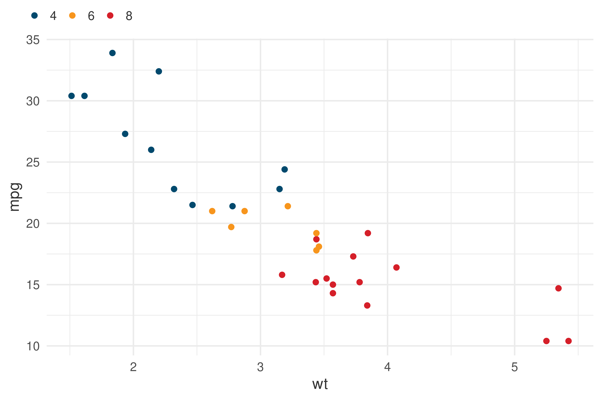

library(ggplot2)
library(onsvplot)
ggplot(mtcars, aes(wt, mpg)) +
geom_point(aes(color = factor(cyl))) +
theme_onsv() +
scale_discrete_onsv()

Este é um template do Quarto Markdown com os padrões de formatação do Observatório Nacional de Segurança Viária. Com o template é possível exportar os relatórios técnicos e outros estudos do Observatório em três formatos: html, pdf ou docx.
Para importar e começar a utilização do template em sua máquina, é necessário utilizar o quarto pelo terminal, com o seguinte comando:
quarto use template onsv/onsvpubPara selecionar o formato desejado, é necessário inserir um entre os três tipos na parte format: do header YAML:
title: título do documento
format: onsvpub-html
author: nome do autor
date: last-modifiedSegue a lista dos três formatos:
onsvpub-htmlonsvpub-pdfonsvpub-docxCom o quarto no terminal também é possível renderizar com o comando:
quarto render documento.qmd --to onsvpub-htmlem que onsvpub-html pode ser substituido por onsvpub-pdf ou onsvpub-docx.
Aqui são apresentados alguns exemplos de aplicação do template.
Segue um exemplo de gráfico feito com o ggplot2 e onsvplot. Ao utilizar um chunk de código, o comportamento padrão do template é ocultar o código. Mas é possível re-abilitar com echo: true nas opções do chunk. Aqui também segue um exemplo da possibilidade de fazer uma referência cruzada (Figura 1).
library(ggplot2)
library(onsvplot)
ggplot(mtcars, aes(wt, mpg)) +
geom_point(aes(color = factor(cyl))) +
theme_onsv() +
scale_discrete_onsv()As tabelas elaboradas em markdown são exibidas com o estilo do template, seguindo os parâmetros definidos em css. Segue um exemplo na Tabela 1.
| mpg | cyl | disp | hp | drat | wt | qsec | vs | am | gear | carb | |
|---|---|---|---|---|---|---|---|---|---|---|---|
| Mazda RX4 | 21.0 | 6 | 160 | 110 | 3.90 | 2.620 | 16.46 | 0 | 1 | 4 | 4 |
| Mazda RX4 Wag | 21.0 | 6 | 160 | 110 | 3.90 | 2.875 | 17.02 | 0 | 1 | 4 | 4 |
| Datsun 710 | 22.8 | 4 | 108 | 93 | 3.85 | 2.320 | 18.61 | 1 | 1 | 4 | 1 |
| Hornet 4 Drive | 21.4 | 6 | 258 | 110 | 3.08 | 3.215 | 19.44 | 1 | 0 | 3 | 1 |
| Hornet Sportabout | 18.7 | 8 | 360 | 175 | 3.15 | 3.440 | 17.02 | 0 | 0 | 3 | 2 |
| Valiant | 18.1 | 6 | 225 | 105 | 2.76 | 3.460 | 20.22 | 1 | 0 | 3 | 1 |
Para dúvidas ou sugestões, envie e-mail para pedro.borges@onsv.org.br ou abra uma issue em github.com/onsv/onsvpub